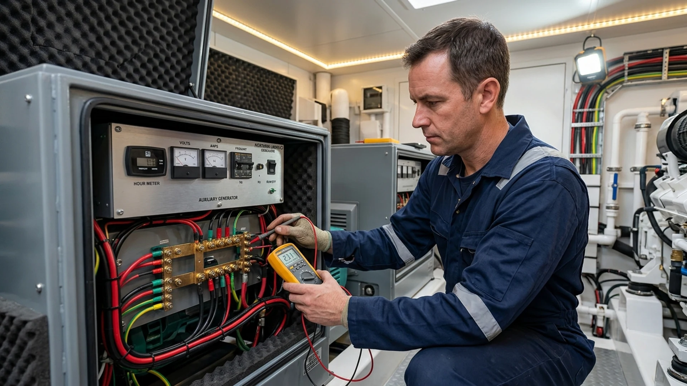

Bölgesel Mobil Servis · Viaport Marina Tuzla
Tuzla Marin Jeneratör Tamiri ve Servisi
Viaport Marina Tuzla, tersaneler bölgesi ve çevre bağlama alanlarında marin jeneratör bakım, mekanik onarım ve elektriksel arıza tespitini teknenizin başında yürütüyoruz.
Tuzla bölgesinde rıhtımda jeneratör servisi.
Teknenizi yerinden oynatmadan bağlı olduğu pontonda jeneratör arızalarını inceliyor, gerekli bakım ve onarım adımlarını planlıyoruz.
Bilgilendirme: DM MARİN, bağımsız çok markalı özel marin servistir; adı geçen motor veya jeneratör markalarının yetkili servisi değildir.
Tuzla marin jeneratör servis kapsamı
Kohler, Cummins Onan, Fischer Panda, Northern Lights ve diğer marin jeneratör markalarında saha tecrübesiyle hizmet sunuyoruz.
Sıkça Sorulan Sorular
Servis Süreci
Talep
Model ve arıza belirtisini iletin.
Ön Değerlendirme
Ekibimiz teknik hazırlığı yapar.
Sahada Müdahale
Marinada teknenizin başında işlem.
Kontrol & Teslim
Test ve bilgilendirme sonrası teslimat.